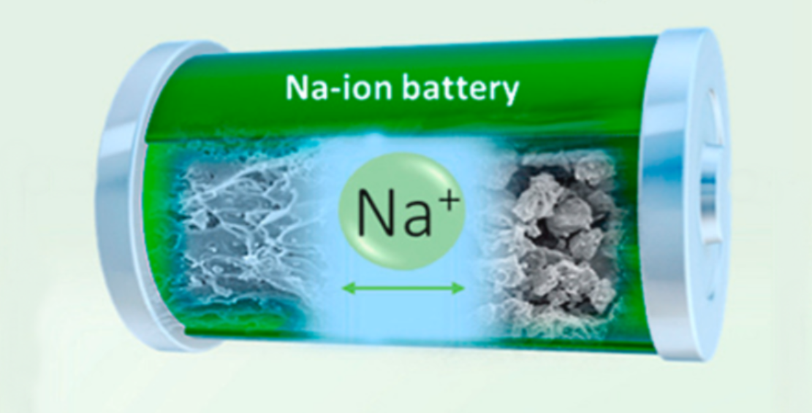

A promising next-generation battery technology that may be able to get around some of lithium-ion batteries' drawbacks is sodium-ion batteries. Sodium ions (Na+) are the charge carriers in sodium-ion batteries (NIBs), a kind of rechargeable battery.
They have several benefits over lithium-ion batteries, such as:
1. Cost and Abundance: Compared to lithium, sodium is much more affordable and easier to obtain due to its abundance. Because of this, sodium-ion batteries may become much less expensive, making them more accessible to consumers.
2. Thermal Stability: Compared to lithium-ion batteries, sodium-ion batteries are less likely to experience thermal runaway, a potentially disastrous occurrence. This increases the safety of sodium-ion batteries, especially when used in electric vehicle applications.
3. Environmental friendliness: Compared to lithium mining and processing, sodium mining and processing causes less environmental harm. Hence, sodium-ion batteries are a more environmentally friendly choice.
4. Cycle Life: Sodium-ion batteries can endure a significant number of charge-discharge cycles before experiencing a decline in performance, similar to lithium-ion batteries. This implies that they have a longer useful life.
5. High energy density: As a result of recent developments in sodium-ion battery technology, batteries with energy densities that are on par with or higher than those of lithium-ion batteries have been created. As a result, sodium-ion batteries are better suited for applications requiring a smaller amount of space because they can store more energy per unit of volume.

6. Safety and Reliability: Because sodium-ion batteries have a lower operating temperature and reaction energy than lithium-ion batteries, they are safer by nature. They become less prone to fire or explosion as a result, increasing their dependability for use in a range of applications.
7. Scalability and Cost Reduction: Because sodium is more plentiful and requires less money for mining and processing than lithium-ion batteries, sodium-ion batteries may be more scalable and economical than lithium-ion batteries. This might cause sodium-ion batteries to be used more widely across a range of industries.
8. Manufacturing Process: Because water-based electrolytes are used instead of lithium-ion batteries, which are more toxic and flammable, the manufacturing process for sodium-ion batteries is less complicated and more ecologically friendly.
9. Material Availability: Mineral deposits and seawater both contain sodium, making it a widely accessible element. Because of this, it is a more economical and environmentally friendly substitute for lithium, which is primarily found in isolated areas in brines rich in lithium.
10. Recyclability: Sodium-ion batteries are easier to recycle than lithium-ion batteries, as sodium is a more abundant and less reactive metal. This might result in sodium-ion batteries having a circular economy, which would lessen their environmental impact.
Conclusion
Overall, sodium-ion batteries offer several advantages over lithium-ion batteries, making them a promising candidate for the next generation of battery technology. Their abundance, safety, environmental friendliness, and potential for high energy density make them well-suited for various applications, including electric vehicles, large-scale energy storage, and portable electronics.
Even though more study and development are required to fully realize sodium ion batteries' potential, they have the power to completely transform the battery industry and make batteries more accessible, safe, and environmentally friendly in the long run.